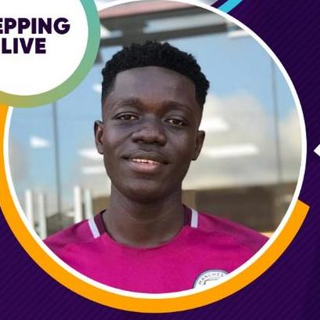

Prince Abbam Owia

Summary
A Junior Web Developer with a focus on WordPress, HTML, CSS, and web deployment,
aiming to transition into a Senior Developer and React Specialist within the next year.
Dedicated to expanding technical expertise and contributing to the success of a growing development team.
Education
- Software Programming
Blue Crest College | 2015
- WASSCE
Odorgonno Senior High School | 2013
- BECE
Mataheko '3' JHS | 2009
Work Experience
Blogger/Content Writer
DCLeakers | 2015 - present
- Curate and write timely content for publication across platforms.
- Source and create newsworthy articles based on current trends on social media.
- Manage daily publication and social media interactions.
- Edit content to meet editorial standards and ensure accuracy.
Wordpress Developer
Self Employed | 2015 - present
- Build and deploy custom websites tailored to clients' needs and preferences.
- Optimize websites for SEO to improve search engine visibility
- Utilize tools such as Elementor to create responsive, user-friendly web designs.
- Troubleshoot, debug, and ensure websites run smoothly for an optimal user experience.
Graphic Designer
Newdoor Ventures | 2015 - 2019
- Designed marketing materials, including flyers, logos, business cards, and letterheads.
- Managed the printing and production process for client designs.
- Maintained consistent branding and design quality across all deliverables
Skills
- Web Development: HTML, CSS, WordPress, Website Deployment, SEO Optimization
- Design & Video Editing: Adobe Photoshop, After Effects, Premiere Pro
- Web Tools: Elementor (for WordPress), Troubleshooting & Debugging
- Languages: English (Fluent)
Achievments
- Experienced in deploying and hosting websites, ensuring they perform efficiently.
- Continuously developing skills in React and modern web technologies to stay ahead in the field.
Additional Information